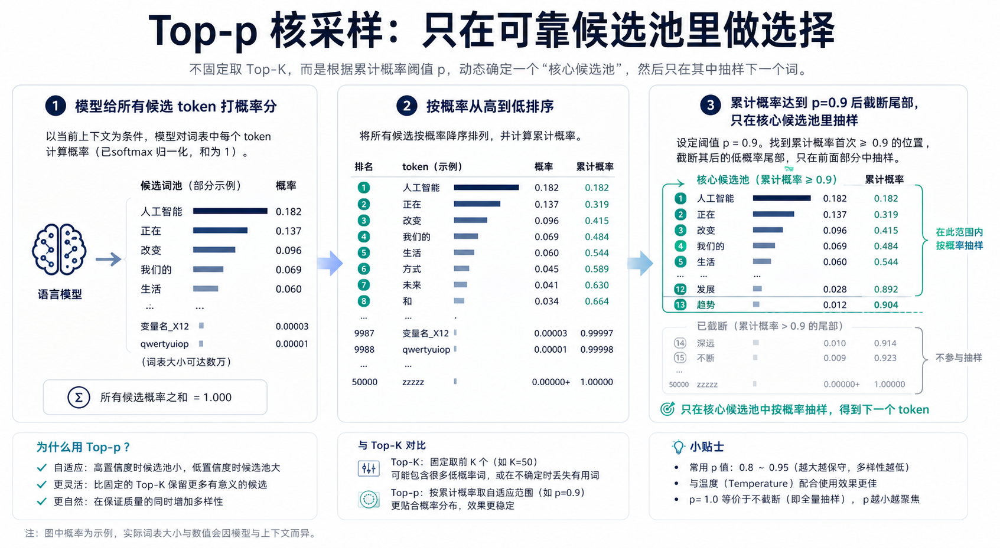
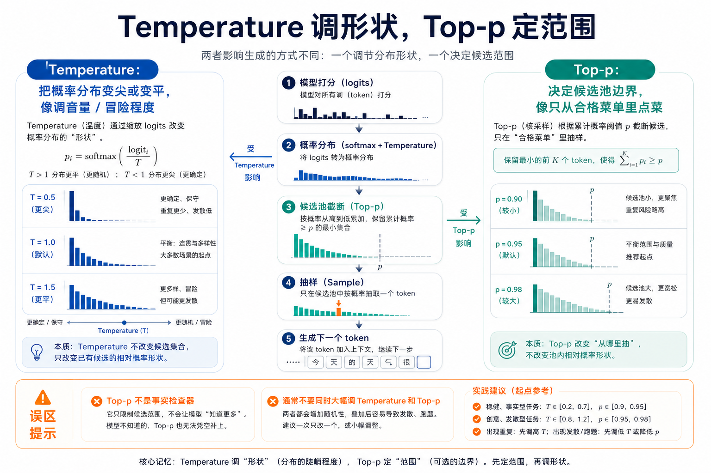

为什么这个概念重要？
大模型每次回答，不是一次性把整段话“想好”，而是一个 token 一个 token 地往外生成。每一步，它都会面对一张候选名单：下一个最可能是“苹果”、也可能是“香蕉”、还可能是一些概率很低但奇怪的词。
如果模型总是选概率最高的那个词，回答会很稳定，但可能像模板一样死板。如果它完全随便抽，回答会更有变化，却更容易跑偏。Top-p 就是在这两者之间放了一个边界：不是从所有词里乱抽，而是只从“累计概率够高的一小圈候选词”里抽。
这很重要，因为今天的 AI 写作、客服、搜索总结、代码助手和创意工具，都要在“稳定”和“多样”之间做平衡。Top-p 决定了模型生成时的候选范围，理解它，就能看懂很多 AI 产品为什么会有不同的风格、风险和使用建议。
一个直观类比：在菜单里点菜
想象你走进一家餐厅，服务员根据你的口味推荐下一道菜。菜单上有 100 道菜，但前几道特别符合你的需求：清蒸鱼、炒青菜、米饭、汤。后面也有一些菜，比如生日蛋糕、辣椒冰淇淋、实验室试剂风味饮料，虽然不是绝对不可能，但明显很离谱。
如果服务员从 100 道菜里随便抽，你可能会吃到奇怪组合。如果他只给你概率最高的第一道菜，每次都很安全，但也太单调。Top-p 像一个“只看靠谱菜单”的规则：把最符合需求的菜按推荐概率排好，累计到 90% 左右就停，剩下长尾奇怪选项先不看。
所以，Top-p 的核心不是“让 AI 更聪明”，而是“让 AI 在一个更合理的候选范围里做选择”。它像餐厅经理在点菜前先划掉不靠谱选项。

工作原理：Top-p 到底怎么运作？

第一步，模型先给所有可能的下一个 token 打分。这个分数还不是最终概率，可以理解为“它觉得每个词有多合适”。
第二步，系统把这些分数变成概率，并从高到低排序。比如最高概率的词是 0.36，第二个是 0.23，第三个是 0.15。
第三步，从最高概率开始往后累加，直到累计概率达到 p。假设 p=0.9，那么前面几个词的概率加起来一旦达到 90%，候选池就截断。
第四步，模型只在这个候选池里抽样，生成下一个 token。下一步再重新计算、重新排序、重新截断。也就是说，Top-p 不是一次设置后固定菜单，而是每生成一个 token 都动态更新。
关键术语解释
| 术语 | 专业解释 | 白话解释 |
|---|---|---|
| Token | 模型处理和生成文本时的基本单位，可以是字、词或词的一部分。 | AI 写字时不是一次写整段，而是像拼积木一样一个小块一个小块往外放。 |
| Logits | 模型在变成概率之前，对每个候选 token 给出的原始分数。 | 像老师先给每个答案打草稿分，还没换算成百分比。 |
| Probability Distribution | 所有候选 token 概率加起来为 1 的分布。 | 像一张抽奖券表：每个词有自己的中奖概率。 |
| Top-p / Nucleus Sampling | 按概率从高到低累加，保留累计概率达到 p 的最小候选集合，再从中抽样。 | 只在最靠谱的一圈候选词里抽，不让很长尾的奇怪词随便混进来。 |
| Temperature | 调节概率分布尖锐或平坦程度的采样参数。 | 像调“保守或冒险”的旋钮，但不是智商旋钮。 |
一个真实应用案例：AI 写作助手为什么要用 Top-p
假设你让 AI 写一封客户道歉邮件。模型下一句可以写“非常抱歉给您带来不便”，也可以写“我们理解您的着急”，这些都是合理候选。它也可能有极低概率写出夸张、幽默或不合场景的话。
在严肃客服场景里，产品通常希望回复稳定、得体、少出错，于是会用较保守的采样设置：Top-p 不放得太宽，Temperature 也不太高。这样模型仍有一点表达变化，但不太容易跳到奇怪词汇。
在广告文案、故事创作、头脑风暴里，系统可能允许更宽的候选池，让模型探索更多表达。此时 Top-p 可以略放宽，但仍不是越大越好。越大，长尾词越容易进来，惊喜和跑偏会同时增加。
常见误区
- 误区一：Top-p 越高，AI 越聪明。不对。Top-p 只改变候选范围，不增加知识，也不会提高推理能力。
- 误区二：Top-p 可以防止幻觉。不对。它能减少一部分离谱抽样，但事实错误主要还要靠检索、证据、工具调用和评估。
- 误区三：Top-p 和 Temperature 是同一个东西。不对。Temperature 改变概率分布的形状，Top-p 决定候选池的边界。
- 误区四：把 Top-p 设成 1 就最好。不一定。p=1 接近允许从完整分布里抽样，长尾词更容易参与，创意可能增加，失控风险也会增加。
- 误区五：所有任务都应该手动调 Top-p。不需要。大多数普通用户保持默认即可。只有当你明确要控制稳定性、创意性或批量生成风格时，才值得调整。
总结：3句话讲清核心认知
复习问题
- 如果一个 AI 写客服回复总是太死板，你会更可能调 Top-p、Temperature，还是让它联网搜索？为什么？
- 为什么 Top-p 能减少一部分奇怪表达，却不能保证回答事实正确？请用“菜单点菜”的类比解释。
- Temperature 和 Top-p 都会影响生成结果。请分别用一句话说明：一个在调什么，一个在限制什么。